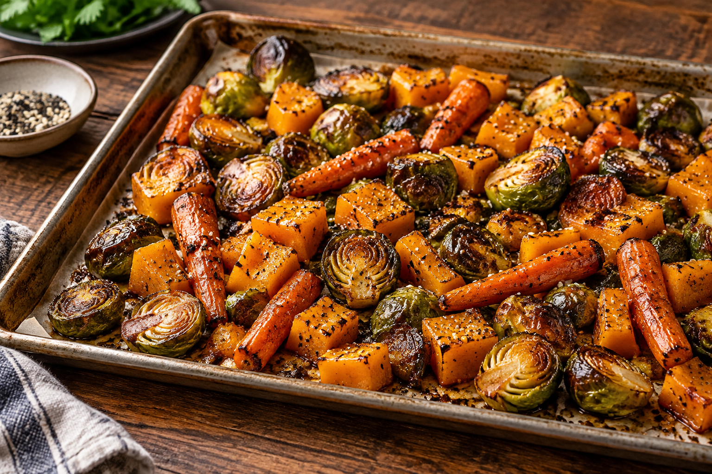
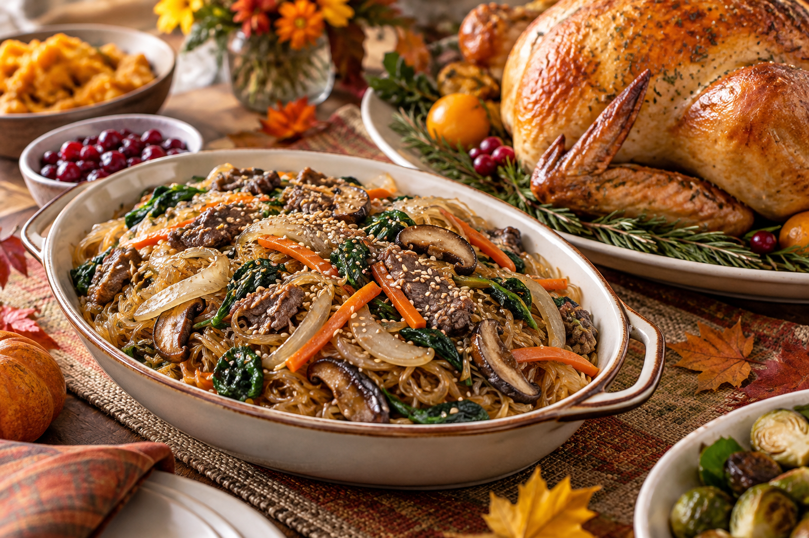
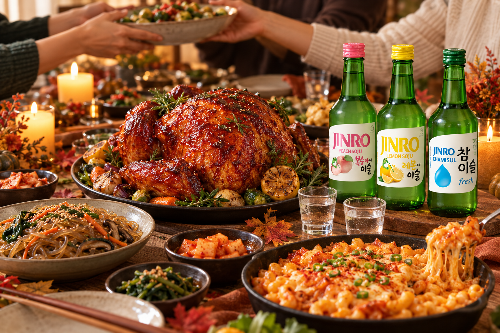

今年感恩節，加點韓式風味：5 道值得一試的韓式融合料理
從韓式辣椒醬烤火雞到韓式雜菜配菜，今年用五種簡單的方式，把韓國風味端上你的感恩節餐桌。
每年 11 月，美國各地的親朋好友都會聚在一起過感恩節。烤火雞、馬鈴薯泥、南瓜派和蔓越莓醬，都是經典菜色。
不過，越來越多人開始在節日菜單中加入新風味。韓式辣椒醬、泡菜等韓國常備食材，現在在許多超市都買得到，韓式節日食譜也比以往更容易找到。
今年何不試試不一樣的？以下是五道值得加進餐桌的韓式感恩節料理。

1. 韓式辣椒醬烤火雞
經典烤火雞通常以奶油、香草、鹽和胡椒調味。韓式版本則多了一層醬汁，用韓式辣椒醬（gochujang）、蜂蜜、蒜末和少許醬油調成。
烤火雞時一邊刷上醬汁。外皮會變成油亮的紅褐色，味道則是鹹甜中帶點微辣。
風味：鹹香、甜、微辣

2. 泡菜起司通心粉
起司通心粉是感恩節餐桌上最受歡迎的配菜之一。今年，試著加點泡菜吧。
把切碎的泡菜拌進通心粉和起司醬裡，再放進烤箱烘烤。泡菜的酸辣能平衡起司的濃郁。
最後撒上蔥花或捏碎的韓國海苔，韓式風味更加分。
風味：濃郁、微酸、鹹香

3. 韓式地瓜燒
地瓜燒（sweet potato casserole）通常是用地瓜泥、奶油、肉桂和棉花糖做成的。
韓式版本則改用韓國地瓜（goguma），以香甜綿密的口感聞名。把蒸熟的韓國地瓜加一點奶油和牛奶壓成泥，鋪上堅果、黑芝麻或淋上一點楓糖漿，再送進烤箱。
風味：香甜、堅果香、暖心

4. 韓式大醬楓糖烤蔬菜
把韓式大醬（doenjang）和楓糖漿搭在一起，就是一道簡單的烤蔬菜配菜。
將紅蘿蔔、抱子甘藍和南瓜拌上少許韓式大醬、楓糖漿、橄欖油和黑胡椒，烤到表面焦糖化。大醬的鹹香正好平衡楓糖漿的甜味。
風味：醇厚、香甜、鮮味十足

5. 用韓式雜菜取代傳統填餡
傳統的感恩節填餡（stuffing）是用麵包丁、洋蔥、西洋芹和香草做成的。想來點韓式變化，可以參考韓式雜菜（japchae），也就是冬粉和蔬菜一起拌炒的料理。
先準備地瓜冬粉，再加入紅蘿蔔、菠菜、香菇、洋蔥和少許牛肉，最後用醬油、香油和蒜末調味。
可以用來取代填餡，也可以當成一道獨立的配菜。Q 彈的冬粉讓它在餐桌上特別亮眼。
風味：Q 彈、鹹香、鮮味十足

用 JINRO 搭配你的感恩節餐桌
這些料理從甜、鹹到辣都有。如果想搭配 JINRO，以下是三組簡單的組合。建議冰鎮後享用。
韓式辣椒醬烤火雞 × JINRO Peach
JINRO Peach 多汁的桃子風味能柔和辣椒醬的辣度，甜味也和醬汁裡的蜂蜜相互呼應。
泡菜起司通心粉 × JINRO Lemon
JINRO Lemon 明亮的酸度能化解起司的濃郁，也和泡菜的酸味方向一致。
韓式雜菜 × JINRO Chamisul Fresh
JINRO Chamisul Fresh 口感清爽順口，不會蓋過韓式雜菜的醬油和香油風味。

一張容得下各種風味的餐桌
這五道料理都來自一個簡單的想法：不同的飲食文化，也能共享同一張餐桌。
在韓國，分享食物是大家相處的重要方式，從在家做飯到和朋友聚餐都是如此。這正好與感恩節的精神不謀而合。
今年試做一道韓式料理，看看它和你的餐桌有多搭。感恩節快樂！
想探索更多韓國美食故事與 JINRO 搭配，歡迎追蹤 JINRO Global 官方 Instagram、Facebook 和 YouTube。
本文僅供已達法定飲酒年齡的讀者閱讀。請理性、適量享用 JINRO，切勿酒後駕車。